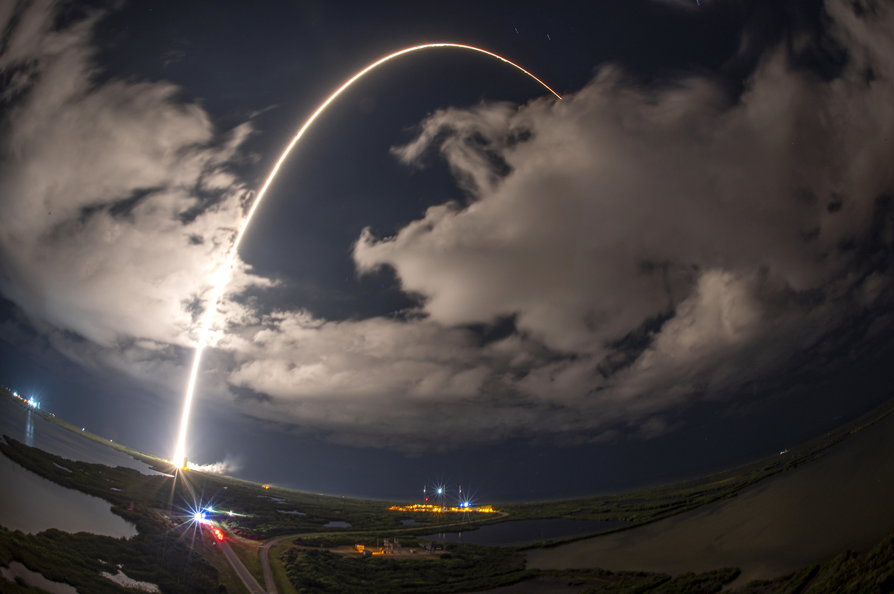
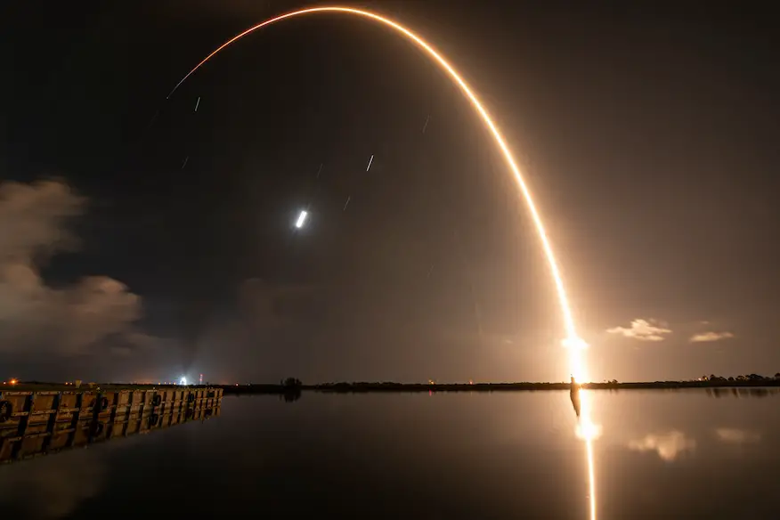

Ajusta velocidad, ángulo y gravedad, observa la trayectoria y entiende los conceptos clave (alcance, altura máxima y tiempo de vuelo). Ideal para exposiciones y prácticas de laboratorio virtual.
Simulador interactivo
Tip: en el ecuador la gravedad efectiva es ~9.78 m/s²; en Quito (~2850 m) disminuye un poquito. Puedes probar ambos valores.
Teoría express
- Componentes iniciales:
v0x=v0·cos(θ),v0y=v0·sin(θ) - Posición:
x(t)=v0x·t,y(t)=v0y·t - (1/2) g t² - Tiempo de vuelo (y=0):
T = 2 v0y / g - Altura máxima:
H = (v0y)² / (2g) - Alcance:
R = (v0)²·sin(2θ)/g
Optimiza el alcance con θ≈45° cuando el punto de caída está a la misma altura del lanzamiento y no hay resistencia del aire.

El movimiento parabólico es un tipo de movimiento bidimensional donde actúan dos componentes: una horizontal, con velocidad constante, y otra vertical, afectada por la gravedad. Si se duplica la velocidad inicial (𝑣0) manteniendo el mismo ángulo de lanzamiento (𝜃) y la gravedad (𝑔), el alcance (𝑅) se cuadruplica, ya que este depende del cuadrado de la velocidad inicial. En condiciones ideales, sin la influencia del aire, el alcance máximo se logra con un ángulo de 45°, pues allí se equilibran las componentes vertical y horizontal del movimiento, logrando la mayor distancia posible.
En el caso de los cohetes, el lanzamiento comienza de forma vertical no para seguir una parábola perfecta, sino para atravesar la parte más densa de la atmósfera de manera eficiente. Esto reduce la resistencia del aire y el consumo de combustible durante los primeros instantes del vuelo. Una vez alcanzada cierta altura, el cohete se inclina gradualmente para ganar velocidad horizontal, necesaria para entrar en órbita.
Durante el movimiento parabólico, la única fuerza que actúa verticalmente es la gravedad, la cual dirige el objeto hacia la Tierra y modifica su trayectoria. Sin embargo, cuando un cohete alcanza el espacio, su movimiento deja de ser una parábola perfecta porque entran en juego fuerzas adicionales y se aplican maniobras de control que permiten ajustar su dirección y mantener una trayectoria estable alrededor del planeta.